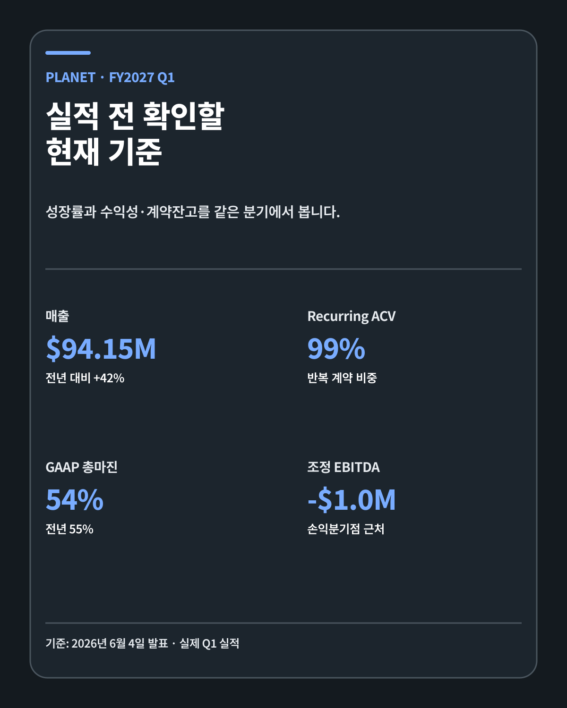
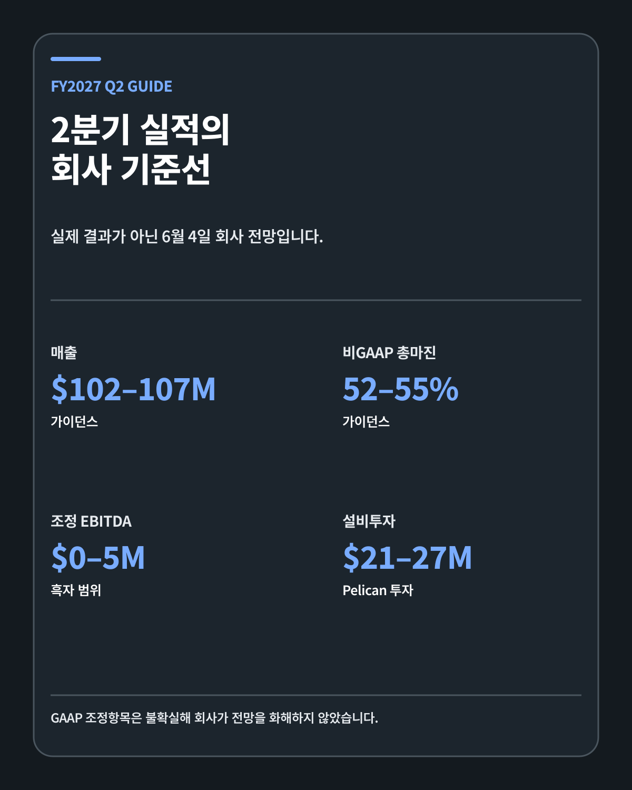
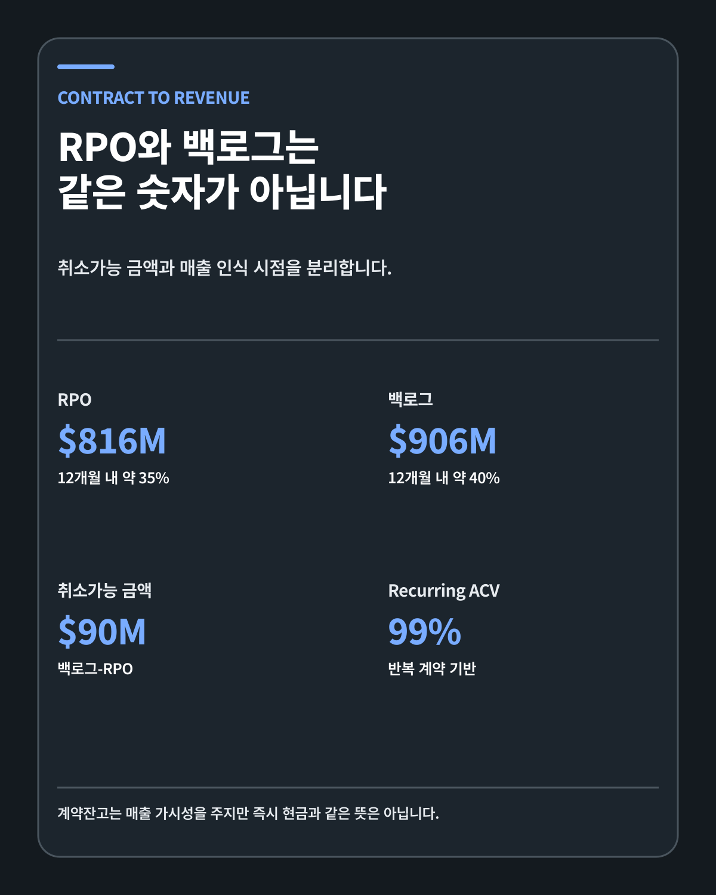
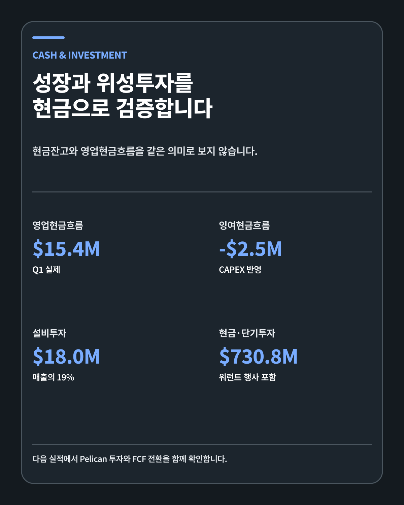

SPACE DATA · EARNINGS PREVIEW
플래닛랩스 FY2027 Q2: 계약잔고가 현금으로 바뀌는가
플래닛랩스의 다음 질문은 위성 수가 아닙니다. RPO와 백로그가 반복 데이터 매출, 마진과 현금흐름으로 함께 바뀌는지를 봅니다.
FIVE-LINE ANSWER
플래닛랩스 FY2027 2분기 실적 콜은 한국시간 2026년 9월 4일 오전 6시입니다. 회사가 6월에 제시한 기준은 매출 1억200만–1억700만달러, 비GAAP 총마진 52–55%, 조정 EBITDA 0–500만달러와 설비투자 2100만–2700만달러입니다. 1분기 RPO는 8억1601만달러, 백로그는 9억605만달러였지만 약 9005만달러의 취소가능 금액과 장기 인식기간을 분리해야 합니다. 현금·단기투자 7억3080만달러에는 워런트 행사대금이 포함됐고 1분기 잉여현금흐름은 마이너스 252만달러였습니다. 이번 실적의 질문은 위성·계약의 증가가 반복 데이터 매출, 마진과 현금흐름으로 동시에 전환되는가입니다.

발표 일정과 회계연도
Planet 공식 이벤트 페이지는 2026년 9월 3일 오후 2시 PT에 FY2027 2분기 실적 콜을 연다고 안내합니다. 9월 미국 태평양시간은 PDT UTC-7이고 한국은 UTC+9이므로 한국시간 9월 4일 오전 6시입니다.
Planet 회계연도는 1월 말에 끝납니다. FY2027 Q2는 달력상 2026년 5월–7월, 정확히는 7월 31일에 끝난 분기입니다. FY2027이라는 이름을 2027년 달력 실적으로 오해하면 안 됩니다.
실적 발표는 분기 종료 뒤 확인된 결과와 다음 분기·연간 전망을 함께 제공합니다. 실제 결과, 회사 전망과 제 시나리오를 분리합니다.
사업의 출발점은 반복 데이터입니다
Planet은 약 200기의 지구관측 위성군으로 육지를 반복 촬영하고 영상·분석·위성서비스를 정부와 기업에 제공합니다. 단발성 위성 판매만으로 설명하기 어렵습니다.
1분기 말 recurring ACV 비중은 99%였습니다. 대부분의 연간계약가치가 반복 계약에서 나왔다는 뜻입니다. 반복성은 매출 가시성을 높이지만 계약 갱신, 데이터 품질과 고객 사용확대가 유지돼야 합니다.
Planet의 해자는 세 층으로 나눌 수 있습니다. 첫째는 높은 촬영 빈도와 누적 데이터입니다. 둘째는 Pelican 고해상도와 PlanetScope 중해상도를 함께 제공하는 제품군입니다. 셋째는 농업·산불·해양·국방 고객의 업무에 데이터를 연결하는 분석입니다.
1분기 기준
Planet FY2027 1분기 실적과 SEC 10-Q를 대조한 기준은 다음과 같습니다.
| 항목 | FY2027 1분기 | 전년·의미 |
|---|---|---|
| 매출 | 9415만달러 | +42% |
| Recurring ACV | 99% | 반복 계약 기반 |
| GAAP 총마진 | 54% | 전년 55% |
| 비GAAP 총마진 | 56% | 전년 59% |
| 조정 EBITDA | -100만달러 | 손익분기점 근처 |
| 영업현금흐름 | 1544만달러 | 플러스 |
| 잉여현금흐름 | -252만달러 | 설비투자 반영 뒤 마이너스 |
| 현금·단기투자 | 7억3080만달러 | 워런트 행사 포함 |
매출은 예상보다 빠르게 성장했지만 수익성은 완전히 따라오지 않았습니다. GAAP 총마진은 1%포인트, 비GAAP 총마진은 3%포인트 낮아졌고 조정 EBITDA는 소폭 적자였습니다.

GAAP 순손실의 워런트 효과
1분기 GAAP 순손실은 1억3890만달러였습니다. 이 숫자에는 주가 상승으로 공모 워런트 부채의 공정가치가 커지면서 발생한 재평가손실 약 1억650만달러가 포함됐습니다.
회사는 공모 워런트를 상환했고 남은 사모 워런트도 무현금 방식으로 행사됐다고 밝혔습니다. 따라서 같은 공모 워런트 부채 재평가는 이후 분기에 반복되지 않습니다.
이 설명이 본업 손실을 없애지는 않습니다. 영업손실은 3489만달러였고 R&D 3342만달러, 판매·마케팅 2278만달러와 관리비 2909만달러가 발생했습니다. 워런트 손실과 영업비용을 분리해서 봅니다.
2분기 가이던스
회사의 Q2 기준선은 매출 1억200만–1억700만달러, 비GAAP 총마진 52–55%, 조정 EBITDA 0–500만달러, 설비투자 2100만–2700만달러입니다.
| 항목 | Q2 회사 전망 | 확인할 질문 |
|---|---|---|
| 매출 | 1억200만–1억700만달러 | 여섯 번째 분기 기록 여부 |
| 비GAAP 총마진 | 52–55% | 위성서비스·제품 믹스 |
| 조정 EBITDA | 0–500만달러 | 손익분기점 회복 |
| 설비투자 | 2100만–2700만달러 | Pelican·중해상도 위성 투자 |
매출 중간값 1억450만달러는 1분기보다 약 11% 높고 전년 동기 7339만달러보다 약 42% 높습니다. 가이던스 상단을 넘는지보다 마진과 EBITDA가 함께 좋아지는지 봅니다.
비GAAP 전망은 GAAP 전망과 동일하지 않습니다. 회사는 주식보상·감가상각 등 조정항목의 불확실성 때문에 비GAAP 전망을 GAAP 수치로 화해하지 않았습니다.

RPO와 백로그
4월 말 RPO는 8억1601만달러, 백로그는 9억605만달러였습니다. RPO는 취소 불가능한 계약과 이연매출 중심이고, 백로그에는 취소 가능한 계약가치도 포함됩니다.
| 구분 | 금액 | 12개월 예상 인식 |
|---|---|---|
| RPO | 8억1601만달러 | 약 35% |
| 취소가능 금액 | 9005만달러 | 계약 조건에 따름 |
| 백로그 | 9억605만달러 | 약 40% |
계약잔고는 미래 매출 가시성을 주지만 현금과 같은 숫자가 아닙니다. 서비스 수행, 위성 용량, 고객 주문과 청구가 필요합니다.
RPO가 줄고 백로그가 늘 수도 있습니다. 취소가능 계약이 추가되거나 기존 RPO가 매출로 인식되는 시점에 따라 두 지표가 다르게 움직입니다. 단순 증가율만 보지 않습니다.

매출 인식 경로
정부 프레임워크 계약은 최대 한도와 실제 주문이 다릅니다. 고객이 개별 주문을 내고 Planet이 데이터를 제공하며 수행의무를 충족해야 매출이 인식됩니다.
위성서비스 계약은 고객 전용 위성 제작·발사·운영이 포함될 수 있어 단계가 더 깁니다. 제작 진행, 발사 일정, 궤도상 시험과 서비스 개시가 현금과 매출 시점에 영향을 줍니다.
이번 실적에서는 신규 계약 발표보다 RPO의 단기 전환 비중, 이연매출, 매출채권과 영업현금흐름의 연결을 확인합니다.
현금흐름과 설비투자
1분기 영업현금흐름은 1544만달러였지만 설비투자와 내부사용 소프트웨어를 차감한 잉여현금흐름은 -252만달러였습니다.
설비투자는 약 1800만달러로 전년 930만달러보다 늘었고 매출의 19%였습니다. Gen-2 Pelican과 중해상도 위성, 고객 소유 위성을 위한 원재료 재고가 증가 요인입니다.
Q2 설비투자 가이던스는 2100만–2700만달러입니다. 매출 증가보다 설비투자가 더 빠르게 늘면 단기 FCF는 약해질 수 있습니다. 반대로 위성 용량이 향후 반복 데이터 매출로 전환되면 장기 자본효율이 좋아질 수 있습니다.

현금잔고의 질
현금·현금성자산·단기투자 7억3080만달러는 회사의 투자 여력을 보여 줍니다. 그러나 증가분에는 공모 워런트 행사대금 약 1억780만달러가 들어 있습니다.
외부 자본 유입과 본업 영업현금흐름을 같은 것으로 보지 않습니다. 2분기에는 영업현금흐름, 설비투자, ATM 사용과 주식 수 변화를 함께 확인합니다.
현금이 많아도 위성 제작과 발사, 유럽 제조시설, 고객 전용 위성에 지속적으로 자본이 필요합니다. 보유 현금이 몇 년의 투자와 손실을 감당할 수 있는지보다 투자한 돈이 매출과 마진으로 돌아오는 속도를 봅니다.
Pelican 경제성
Pelican은 고해상도 영상 제품을 확장하는 핵심 위성입니다. Q1에는 3기가 발사됐고 Gen-2 Pelican-11이 발사장으로 이동했습니다.
Gen-2는 최대 30cm급 영상 제공을 목표로 합니다. 더 높은 해상도는 국방·해양·보험·인프라에서 고객당 가치와 사용처를 늘릴 수 있습니다.
위성 발사 성공만으로 경제성이 증명되지는 않습니다. 가동까지 걸리는 시간, 촬영 용량, 수명, 데이터 처리비용과 계약 단가를 함께 봐야 합니다.
Pelican 수가 늘면서 총마진과 반복 ACV가 개선되면 데이터 해자가 수익으로 전환되는 경로가 확인됩니다. 설비투자만 늘고 활용률과 마진이 낮으면 투자회수기간이 길어집니다.
FY2027 연간 가이던스
Q1 발표 뒤 회사는 연간 매출 가이던스를 4억2500만–4억4100만달러로 높였습니다. 비GAAP 총마진 52–54%, 조정 EBITDA 0–1000만달러, 설비투자 8000만–9500만달러를 제시했습니다.
2분기 결과가 가이던스 안에 있어도 연간 범위가 바뀌면 하반기 계약 전환과 비용 가정이 달라졌다는 뜻입니다. 매출 상향과 동시에 마진·현금흐름이 유지되는지 확인합니다.
연간 매출 성장만 강하고 EBITDA와 FCF가 정체되면 성장은 자본집약적으로 진행됩니다. 마진과 현금이 따라오면 데이터 사업의 운영 레버리지가 나타납니다.
RPO 8억1601만달러를 매출로 환산하는 법
RPO 가운데 약 35%를 향후 12개월에 인식할 것이라는 회사 설명을 단순 계산하면 약 2억8560만달러입니다. 백로그 9억605만달러의 약 40%는 약 3억6240만달러입니다. 두 숫자를 더하면 안 됩니다. 백로그가 RPO를 포함하는 더 넓은 개념이기 때문입니다.
이 계산은 확정된 분기 매출 예측도 아닙니다. 12개월 동안 여러 분기에 걸쳐 인식될 금액이고 실제 서비스 제공, 고객 일정과 계약 변경에 따라 시점이 달라질 수 있습니다. 다만 RPO의 단기 인식 비중이 유지되거나 높아지면 이미 확보한 계약이 가까운 매출로 바뀌는 속도를 확인하는 데 도움이 됩니다.
반대로 RPO 총액이 늘어도 12개월 인식 비중이 낮아질 수 있습니다. 장기 위성서비스 계약이 많이 추가되면 계약가치는 커지지만 단기 매출 기여는 느릴 수 있습니다. 총액, 단기 인식 비중과 계약 종류를 함께 봐야 하는 이유입니다.
1분기에서 2분기로 이어지는 숫자 연결
2분기 매출 가이던스의 중간값은 1억450만달러입니다. 1분기 매출 9415만달러와 비교하면 약 11% 높은 수준입니다. 회사가 가이던스 중간값을 달성한다면 전분기보다 매출 규모가 한 단계 커집니다.
하지만 매출 증가분이 모두 이익으로 남는 것은 아닙니다. 비GAAP 총마진 가이던스 중간값은 53.5%로 1분기 비GAAP 총마진 56%보다 낮습니다. 매출은 늘면서 마진이 낮아질 수 있다는 회사의 비용 가정이 들어 있습니다. 고객 구성, 위성서비스 매출과 발사·운영 비용이 원인인지 설명을 들어야 합니다.
조정 EBITDA 0–500만달러는 손익분기점 진입을 의미합니다. 이 지표에는 주식보상 같은 조정항목이 빠질 수 있으므로 GAAP 영업손익과 현금흐름을 함께 봅니다. 조정 흑자 하나만으로 본업의 모든 비용이 해결됐다고 판단하지 않습니다.
워런트 효과와 본업 손실을 분리하는 이유
1분기 GAAP 순손실 1억3890만달러에는 워런트 공정가치 재평가 손실 약 1억650만달러가 포함됐습니다. 주가와 워런트 가치가 움직이며 생긴 비현금성 회계손실이 순손실을 크게 만들었습니다.
공모 워런트 상환이 끝났기 때문에 같은 공모 워런트에서 같은 규모의 재평가 손실이 반복될 가능성은 낮아졌습니다. 그렇다고 2분기 GAAP 순이익이 자동으로 흑자가 되는 것은 아닙니다. 연구개발, 판매관리, 위성 감가상각과 주식보상 같은 본업 비용은 남아 있습니다.
따라서 전년이나 전분기의 순손실만 비교하면 개선폭을 과대평가할 수 있습니다. 워런트 효과를 제외한 영업손실, 조정 EBITDA와 영업현금흐름을 나란히 놓고 봅니다. 회계 잡음이 줄어든 것과 사업 수익성이 좋아진 것을 구분합니다.
현금흐름을 보는 간단한 연결식
잉여현금흐름은 회사가 제시한 방식에서 영업현금흐름에서 설비투자와 자본화된 내부사용 소프트웨어를 뺀 값입니다. 1분기에는 영업현금 1544만달러가 들어왔지만 약 1800만달러의 투자가 필요해 FCF가 -252만달러였습니다.
2분기 CAPEX 가이던스가 2100만–2700만달러이므로 영업현금흐름이 1분기와 비슷하다면 FCF는 다시 음수일 수 있습니다. 반대로 선급금, 청구 회수와 계약구조가 좋아져 영업현금 유입이 크게 늘면 CAPEX를 감당하면서 FCF가 개선될 수 있습니다.
한 분기의 운전자본은 계약 청구시점 때문에 흔들립니다. 그래서 저는 분기 FCF 하나만 보지 않고 최근 네 분기 합계, 이연매출, 매출채권과 CAPEX 추세를 함께 봅니다. 위성투자 시기에는 현금이 먼저 나가고 데이터 매출은 뒤따를 수 있으므로 투자와 회수의 시차를 확인합니다.
보유자 관점의 실적 발표 청취 순서
실적 보도자료가 나오면 먼저 실제 매출, 비GAAP 총마진, 조정 EBITDA와 CAPEX를 회사 가이던스와 대조합니다. 다음으로 RPO·백로그와 12개월 인식 비중을 적습니다. 이후 연간 가이던스가 유지·상향·하향됐는지 확인합니다.
컨퍼런스콜에서는 숫자보다 경영진 설명의 연결을 봅니다. Pelican의 가동 일정, 신규 정부·상업 계약, 데이터 제품의 사용확대와 마진 변화가 같은 이야기로 이어지는지 확인합니다. 계약 발표만 많고 전환 시점에 대한 답이 계속 늦어지면 경계합니다.
마지막으로 주가 반응을 봅니다. 좋은 실적에도 주가가 하락할 수 있고 나쁜 실적에도 기대가 낮았다면 상승할 수 있습니다. 가격 반응은 시장의 사전 기대를 보여 주지만 회사의 기술 경쟁력과 현금창출력을 대신 평가해 주지는 않습니다.
숫자가 좋아도 추가로 확인할 위험
정부 계약 비중이 커지면 장기 가시성은 높아질 수 있지만 예산 승인, 조달 지연과 국가별 규제에 노출됩니다. 대형 계약 하나가 분기 매출과 현금흐름을 흔들 수도 있습니다.
위성 발사와 운영에는 기술적 위험이 있습니다. 발사 지연, 궤도상 성능, 위성 수명과 데이터 전송비용이 계획과 달라지면 CAPEX 회수기간이 길어집니다. 보험과 발사 파트너가 있어도 모든 사업 손실을 없애 주지는 않습니다.
경쟁도 단순히 위성 수로 끝나지 않습니다. 영상 해상도, 재방문 빈도, 분석 소프트웨어, 정부 보안인증과 고객 업무에 들어간 데이터 이력이 함께 작동합니다. Planet이 위성군 규모를 데이터 제품의 가격결정력과 높은 갱신률로 연결하는지 계속 확인해야 합니다.
세 가지 시나리오
| 시나리오 | 재무 조건 | 계약·위성 조건 | 판단 |
|---|---|---|---|
| 강세 | 매출 상단 초과, 마진 55%+, EBITDA 흑자 | RPO 증가, 단기 전환 유지, Pelican 가동 | 연간 가이드 상향과 현금전환 확인 |
| 기준 | 가이던스 범위 달성 | 계약 시점 변동, RPO·백로그 혼조 | 연간 가이드 유지와 Q3 전환 확인 |
| 약세 | 매출 하단 미달, 마진·EBITDA 약화 | RPO 전환 지연, CAPEX·운전자본 확대 | 펀더멘털 재검토 |
무효화 조건
- 위성 수는 늘지만 데이터 매출과 반복 ACV가 둔화할 때
- RPO와 백로그의 단기 매출 전환이 계속 낮아질 때
- 총마진과 EBITDA가 가이던스 아래로 내려갈 때
- 설비투자·운전자본 증가가 현금흐름을 구조적으로 악화할 때
- Pelican 해상도와 가동률이 고객 계약 확대로 이어지지 않을 때
다음 실적 체크리스트
- 매출 1억200만–1억700만달러
- 비GAAP 총마진 52–55%
- 조정 EBITDA 0–500만달러
- RPO·백로그와 12개월 인식 비중
- CAPEX·영업현금흐름·FCF
- Pelican 가동과 고객 계약
- FY2027 가이던스와 주식 수
제 판단
플래닛랩스의 핵심은 지구를 매일 반복 촬영해 시간이 쌓일수록 가치가 커지는 데이터입니다. 정부·농업·산불·해양 고객의 업무에 들어가면 교체비용과 데이터 이력이 해자가 됩니다.
저는 보유를 이어가면서 계약 최대값보다 매출 전환과 현금을 봅니다. Pelican 투자가 필요한 기술 경쟁력이라는 점은 인정하지만 자본투자가 반복 매출과 마진으로 연결돼야 합니다.
이번 실적에서 회사가 매출 성장과 함께 현금흐름 경로를 보여 주는지 확인하겠습니다. 한 분기 주가 반응보다 기술·해자·창업자·성장률·현금흐름의 순서를 유지합니다.
이 글은 보유 종목을 검증하기 위한 개인 투자 리서치입니다. 특정 종목의 매수·매도를 권유하지 않습니다.
작성 방법
이 글은 2026년 9월 1일 기준 Planet IR · SEC 10-Q · 실적 발표 자료를 교차 확인했습니다. 확인된 사실, 회사 전망과 개인 시나리오를 분리했습니다.
개인 투자 기록이며 특정 종목이나 금융상품의 매수·매도를 권유하지 않습니다. 투자 판단과 손익의 책임은 투자자 본인에게 있습니다.